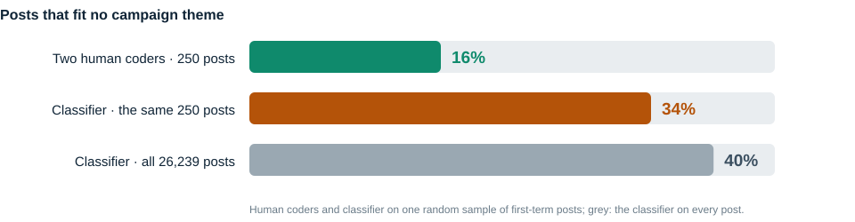

Turn a pile of text into themes you can measure.
A topic model finds the clusters. An LLM proposes names. People decide what they mean. Then the machine is checked against the people before any number is believed.
Pilot software from a UT Austin dissertation. Not independently validated. Try to break it.
The check is the point.

Five steps. Two of them are human.
- Discover.A topic model groups similar posts.
- Name.An LLM proposes names, hundreds of times.
- Define.People turn clusters into a codebook.A person decides
- Check.The classifier is tested against people.A person decides
- Report.Theme shares, with their uncertainty.
Start where you are.
Tutorial
Follow Donald Trump's campaign themes into his first term, try the model yourself, and watch the check catch it.
Take the tutorial →Use it
Install the Python package, hand your coding agent the protocol, and keep the scientific calls for yourself.
Run it on your text →Research
The dissertation and two papers this software comes from, presented unchanged.
Read the research →